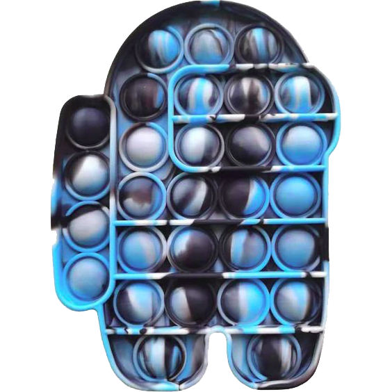
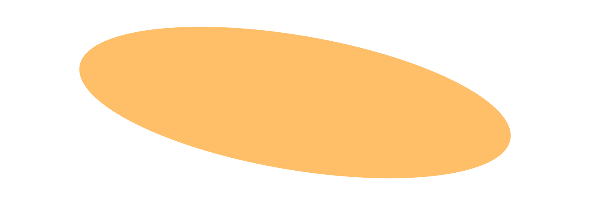

POP IT!
Bienvenido a nuestro sitio web

Los Pop It están hechos de silicona de grado alimenticio (o silicona platino), un material flexible, suave al tacto y libre de químicos tóxicos como el BPA [Bebés y Más]. Esto los hace completamente seguros para los niños, hipoalergénicos, resistentes a las caídas y 100% lavables con agua y jabón sin que pierdan su forma o color.



Tener un Pop It es excelente porque funciona como un fidget toy que alivia el estrés, calma la ansiedad y mejora la concentración al mantener las manos ocupadas. Además, es un juguete de silicona seguro, lavable y muy duradero que ayuda al desarrollo motor de los niños y se puede usar para dinámicas recreativas o de aprendizaje en cualquier lugar.
